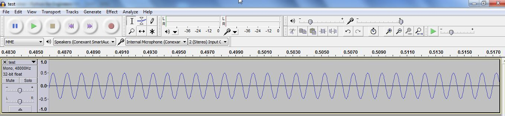
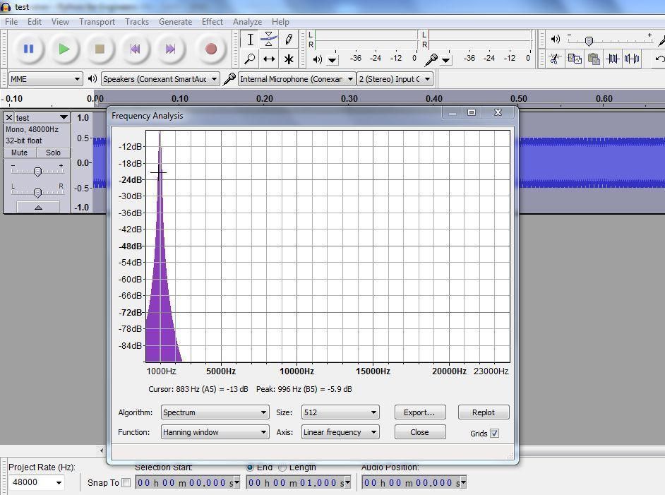
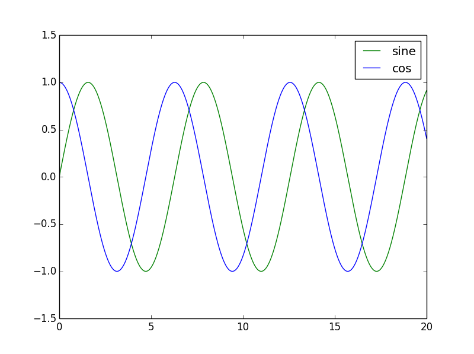
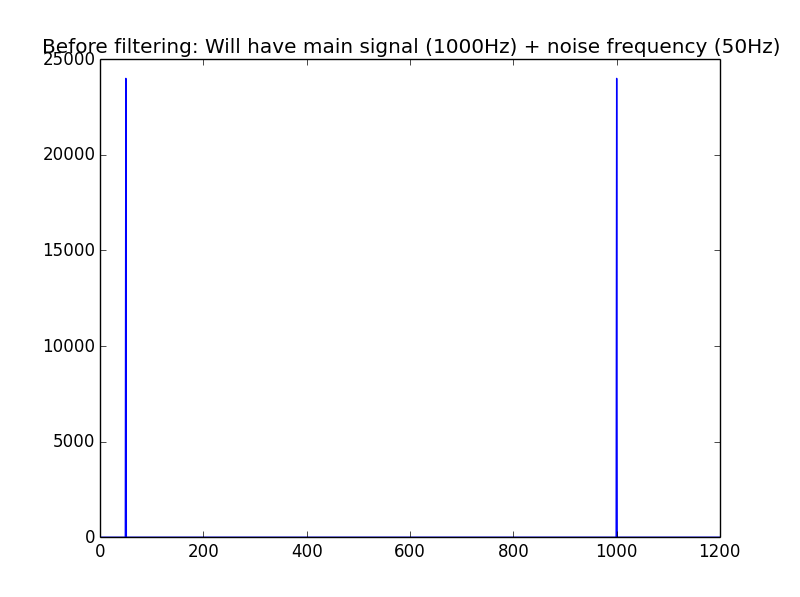
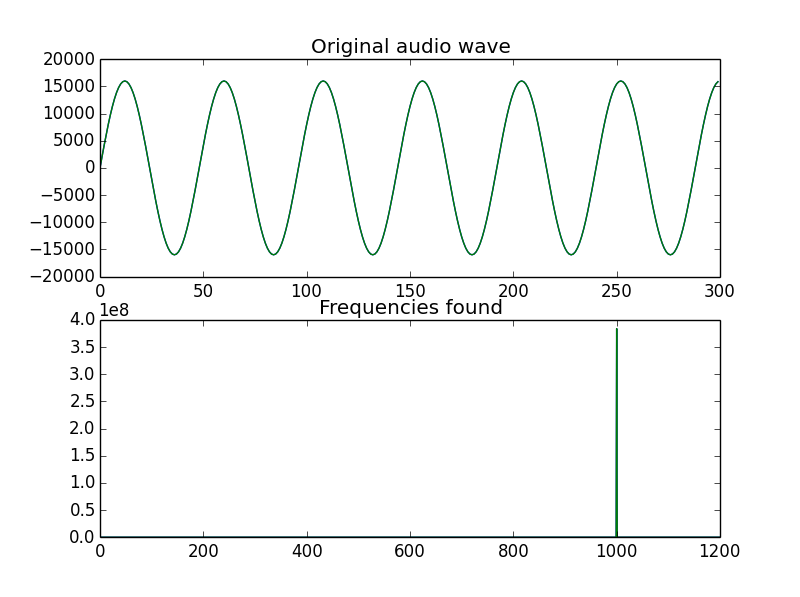
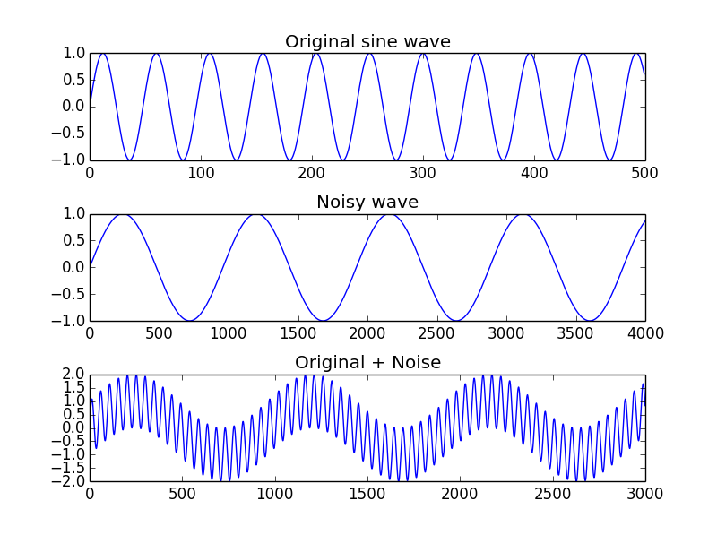
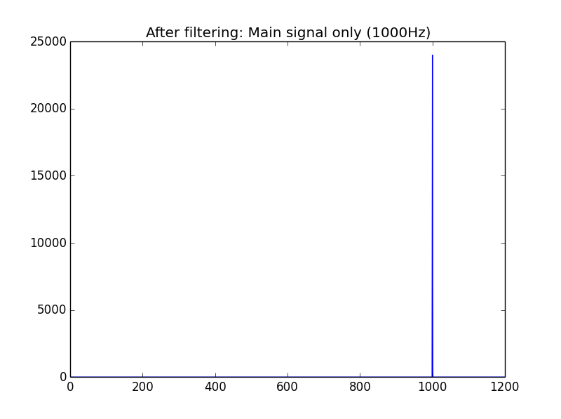
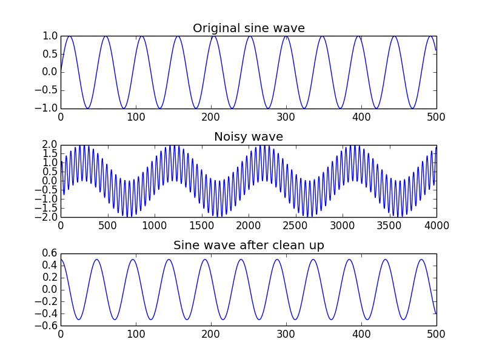

Audio and Digital Signal Processing(DSP) in Python

Beginners Start Here:
Create a Word Counter in Python
An introduction to Numpy and Matplotlib
Introduction to Pandas with Practical Examples (New)
Main Book
Image and Video Processing in Python
Audio and Digital Signal Processing (DSP)
Machine Learning Section
Machine Learning with an Amazon like Recommendation Engine
Create a sine wave
In this project, we are going to create a sine wave, and save it as a wav file.
But before that, some theory you should know.
Frequency: The frequency is the number of times a sine wave repeats a second. I will use a frequency of 1KHz.
Sampling rate: Most real world signals are analog, while computers are digital. So we need a analog to digital converter to convert our analog signal to digital. Details of how the converter work are beyond the scope of this book. The key thing is the sampling rate, which is the number of times a second the converter takes a sample of the analog signal.
Now, the sampling rate doesn’t really matter for us, as we are doing everything digitally, but it’s needed for our sine wave formula. I will use a value of 48000, which is the value used in professional audio equipment.
Sine Wave formula: If you forgot the formula, don’t worry. I had to check Wikipedia as well.
y(t) = A * sin(2 * pi * f * t)
y(t) is the y axis sample we want to calculate for x axis sample t.
A is the amplitude. We’ll come to that.
pi is our old friend 3.14159.
f is the frequency.
t is our sample. Since we need to convert it to digital, we will divide it by the sampling rate.
Amplitude
I mentioned the amplitude A. In most books, they just choose a random value for A, usually 1. But that won’t work for us. The sine wave we generate will be in floating point, and while that will be good enough for drawing a graph, it won’t work when we write to a file. The reason being that we are dealing with integers. If you look at wave files, they are written as 16 bit short integers. If we write a floating point number, it will not be represented right.
To get around this, we have to convert our floating point number to fixed point. One of the ways to do so is to multiply it with a fixed constant. How do we calculate this constant? Well, the maximum value of signed 16 bit number is 32767 (2^15 – 1). (Because the left most bit is reserved for the sign, leaving 15 bits. We raise 2 to the power of 15 and then subtract one, as computers count from 0).
So we want full scale audio, we’d multiply it with 32767. But I want an audio signal that is half as loud as full scale, so I will use an amplitude of 16000.
To the code:
import numpy as np
import wave
import struct
import matplotlib.pyplot as plt
# frequency is the number of times a wave repeats a second
frequency = 1000
num_samples = 48000
# The sampling rate of the analog to digital convert
sampling_rate = 48000.0
amplitude = 16000
file = "test.wav"
I just setup the variables I have declared.
sine_wave = [np.sin(2 * np.pi * frequency * x/sampling_rate) for x in range(num_samples)]
Half of you are going to quit the book right now. Go on, you want to. That’s one killer equation, isn’t it?
But if you remembered what I said, list comprehensions are the most powerful features of Python. I could have written the above as a normal for loop, but I wanted to show you the power of list comprehensions. The above code is quite simple if you understand it. Let’s break it down, shall we? It will be easier if you have the source code open as well.
The first thing is that the equation is in [], which means the final answer will be converted to a list.
[ for x in range(num_samples)]
The range() function generates a list of numbers from 0 to num_samples. So we are saying loop over a variable x from 0 to 48000, the number of samples we have.
[np.sin(2 * np.pi * frequency * x/sampling_rate)]
This says that for each x that we generated, run it through the formula for the sine wave,
2 * pi * f * t.
So if we look at the code again:
sine_wave = [np.sin(2 * np.pi * frequency * x/sampling_rate) for x in range(num_samples)]
It says generate x in the range of 0 to num_samples, and for each of that x value, generate a value that is the sine of that. You can think of this value as the y axis values. All these values are then put in a list. Easy peasy.
nframes=num_samples
comptype="NONE"
compname="not compressed"
nchannels=1
sampwidth=2
Okay, now it’s time to write the sine wave to a file. We are going to use Python’s inbuilt wave library. Here we set the paramerters. nframes is the number of frames or samples.
comptype and compname both signal the same thing: The data isn’t compressed. nchannels is the number of channels, which is 1. sampwidth is the sample width in bytes. As I mentioned earlier, wave files are usually 16 bits or 2 bytes per sample.
wav_file=wave.open(file, 'w')
wav_file.setparams((nchannels, sampwidth, int(sampling_rate), nframes, comptype, compname))
We open the file and set the parameters.
for s in sine_wave:
wav_file.writeframes(struct.pack('h', int(s*amplitude)))
This might require some explanation. We are writing the sine_wave sample by sample. writeframes is the function that writes a sine wave. All that is simple. This might confuse you:
struct.pack('h', int(s*amplitude))
So let’s break it down into parts.
int(s*amplitude)
s is the single sample of the sine_wave we are writing. I am multiplying it with the amplitude here (to convert to fixed point). We could have done it earlier, but I’m doing it here, as this is where it matters, when we are writing to a file.
Now,the data we have is just a list of numbers. If we write it to a file, it will not be readable by an audio player.
Struct is a Python library that takes our data and packs it as binary data. The h in the code means 16 bit number.
To understand what packing does, let’s look at an example in IPython.
In [1]: import numpy as np
In [2]: np.sin(0.5)
Out[2]: 0.47942553860420301
In [5]: 0.479*16000
Out[5]: 7664.0
I am using 0.5 as an example above.
So we take the sin of 0.5, and convert it to a fixed point number by multiplying it by 16000. Now if we were to write this to file, it would just write 7664 as a string, which would be wrong. Let’s look at what struct does:
In [6]: struct.pack('h', 7664)
Out[6]: 'xf0x1d'
x means the number is a hexadecimal. As you can see, struct has turned our number 7664 into 2 hex values: 0xf0 and 0x1d.
Why 0xf0 0x1d? Well, if you convert 7664 to hex, you will get 0xf01d.
Why two values? Because we are using 16 bit values and our number can’t fit in one. So struct broke it into two numbers.
Since the numbers are now in hex, they can be read by other programs, including our audio players.
Coming back to our code:
for s in sine_wave:
wav_file.writeframes(struct.pack('h', int(s*amplitude)))
This will take our sine wave samples and write it to our file, test.wav, packed as 16 bit audio.
Play the file in any audio player you have- Windows Media player, VLC etc. You should hear a very short tone.
Now, we need to check if the frequency of the tone is correct. I am going to use Audacity, a open source audio player with a ton of features. One of them is that we can find the frequency of audio files. Let’s open up Audacity.

So we have a sine wave. Note that the wave goes as high as 0.5, while 1.0 is the maximum value. Remember we multiplied by 16000, which was half of 36767, which was full scale?
Now to find the frequency. Go to Edit-> Select All (or press Ctrl A), then Analyse-> Plot Spectrum.

You can see that the peak is at around a 1000 Hz, which is how we created our wave file.
Calculate the frequency of a sine wave
I took one course in signal processing in my degree, and didn’t understand a thing. We were asked to derive a hundred equations, with no sense or logic. I found the subject boring and pedantic.
Which is why I wasn’t happy when I had to study it again for my Masters. But I was in luck.
This time, the teacher was a practising engineer. He ran his own company and taught part time. Unlike the university teachers, he actually knew what the equations were for.
He started us with the Discrete Fourier Transform (DFT). I had heard of the DFT, and had no idea what it did. I could derive the equation, though fat lot of good it did me.
But this teacher (I forgot his name, he was a Danish guy) showed us a noisy signal, and then took the DFT of it. He then showed the results in a graphical window. We clearly saw the original sine wave and the noise frequency, and I understood for the first time what a DFT does.
Use the DFT to get frequencies
To get the frequency of a sine wave, you need to get its Discrete Fourier Transform(DFT). Contrary to what every book written by Phd types may have told you, you don’t need to understand how to derive the transform. You just need to know how to use it.
In its simplest terms, the DFT takes a signal and calculates which frequencies are present in it. In more technical terms, the DFT converts a time domain signal to a frequency domain. What does that mean? Let’s look at our sine wave.

The wave is changing with time. If this was an audio file, you could imagine the player moving right as the file plays.
In the frequency domain, you see the frequency part of the signal. This image is taken from later on in the chapter to show you what the frequency domain looks like:

The signal will change if you add or remove frequencies, but will not change in time. For example, if you take a 1000 Hz audio tone and take its frequency, the frequency will remain the same no matter how long you look at it. But if you look at it in the time domain, you will see the signal moving.
The DFT was really slow to run on computers (back in the 70s), so the Fast Fourier Transform (FFT) was invented. The FFT is what is normally used nowadays.
The way it works is, you take a signal and run the FFT on it, and you get the frequency of the signal back.
If you have never used (or even heard of) a FFT, don’t worry. I’ll teach you how to start using it, and you can read more online if you want. Most tutorials or books won’t teach you much anyway. They’ll usually blat you with equations, without showing you what to do with them.
On to the code. Open up get_freq.py,
frame_rate = 48000.0
infile = "test.wav"
num_samples = 48000
wav_file = wave.open(infile, 'r')
data = wav_file.readframes(num_samples)
wav_file.close()
We are reading the wave file we generated in the last example. This code should be clear enough. The wave readframes() function reads all the audio frames from a wave file.
data = struct.unpack('{n}h'.format(n=num_samples), data)
Remember we had to pack the data to make it readable in binary format? Well, we do the opposite now. The first parameter to the function is a format string, which is the same thing you use when you do a print(). You are telling the unpacker to unpack num_samples 16 bit words (remember the h means 16 bits).
data = np.array(data)
We then convert the data to a numpy array.
data_fft = np.fft.fft(data)
We take the fft of the data. This will create an array with all the frequencies present in the signal.
Now, here’s the problem. The fft returns an array of complex numbers that doesn’t tell us anything. If I print out the first 8 values of the fft, I get:
In [3]: data_fft[:8]
Out[3]:
array([ 13.00000000 +0.j , 8.44107682 -4.55121351j,
6.24696630-11.98027552j, 4.09513760 -2.63009999j,
-0.87934285 +9.52378503j, 2.62608334 +3.58733642j,
4.89671762 -3.36196984j, -1.26176048 +3.0234555j ])
If only there was a way to convert the complex numbers to real values we can use. Let’s try to remember our high school formulas for converting complex numbers to real…
Wait. Numpy can do that for us.
# This will give us the frequency we want
frequencies = np.abs(data_fft)
The numpy abs() function will take our complex signal and generate the real part of it.
Side Detour
A bit of a detour to explain how the FFT returns its results.
The FFT returns all possible frequencies in the signal. And the way it returns is that each index contains a frequency element. Say you store the FFT results in an array called data_fft. Then:
data_fft[1] will contain frequency part of 1 Hz.
data_fft[2] will contain frequency part of 2 Hz.
…
data_fft[8] will contain frequency part of 8 Hz.
…
data_fft[1000] will contain frequency part of 1000 Hz.
Now what if you have no 1Hz frequency in your signal? You will still get a value at data_fft[1], but it will be minuscule. To give you an example, I will take the real fft of a 1000 Hz wave:
data_fft = np.fft.fft(sine_wave)
abs(data_fft[0])
Out[7]: 8.1289678326462086e-13
abs(data_fft[1])
Out[8]: 9.9475299243014428e-12
abs(data_fft[1000])
Out[11]: 24000.0
If you look at the absolute values for data_fft[0] or data_fft[1], you will see they are tiny. The e-12 at the end means they are raised to a power of -12, so something like 0.00000000000812 for data_fft[0]. But if you look at data_fft[1000], the value is a hue 24000. This can easily be plotted.
If we want to find the array element with the highest value, we can find it by:
print("The frequency is {} Hz".format(np.argmax(frequencies)))
np.argmax will return the highest frequency in our signal, which it will then print. As we have seen manually, this is at a 1000Hz (or the value stored at data_fft[1000]). And now we can plot the data too.
plt.subplot(2,1,1)
plt.plot(data[:300])
plt.title("Original audio wave")
plt.subplot(2,1,2)
plt.plot(frequencies)
plt.title("Frequencies found")
plt.xlim(0,1200)
plt.show()
This should be known to you. The only new thing is the subplot function, which allows you to draw multiple plots on the same window.
subplot(2,1,1) means that we are plotting a 2×1 grid. The 3rd number is the plot number, and the only one that will change. It will become clearer when you see the graph.

And that’s it, folks. We took our audio file and calculated the frequency of it. Next, we will add noise to our plot and then try to clean it.
Cleaning a noisy sine wave
In this example, I’ll recreate the same example my teacher showed me. We’ll generate a sine wave, add noise to it, and then filter the noise. Let’s start with the code.
# frequency is the number of times a wave repeats a second
frequency = 1000
noisy_freq = 50
num_samples = 48000
# The sampling rate of the analog to digital convert
sampling_rate = 48000.0
The main frequency is a 1000Hz, and we will add a noise of 50Hz to it.
#Create the sine wave and noise
sine_wave = [np.sin(2 * np.pi * frequency * x1 / sampling_rate) for x1 in range(num_samples)]
sine_noise = [np.sin(2 * np.pi * noisy_freq * x1/ sampling_rate) for x1 in range(num_samples)]
#Convert them to numpy arrays
sine_wave = np.array(sine_wave)
sine_noise = np.array(sine_noise)
I hope the above isn’t scary to you anymore, as it’s the same code as before. We generate two sine waves, one for the signal and one for the noise, and convert them to numpy arrays.
# Add them to create a noisy signal
combined_signal = sine_wave + sine_noise
I am adding the noise to the signal. As I mentioned earlier, this is possible only with numpy. With normal Python, you’d have to for loop or use list comprehensions. Messy. With numpy, you can add two arrays like they were normal numbers, and numpy takes care of the low level detail for you.
On to some graphing of what we have till now.
plt.subplot(3,1,1)
plt.title("Original sine wave")
# Need to add empty space, else everything looks scrunched up!
plt.subplots_adjust(hspace=.5)
plt.plot(sine_wave[:500])
plt.subplot(3,1,2)
plt.title("Noisy wave")
plt.plot(sine_noise[:4000])
plt.subplot(3,1,3)
plt.title("Original + Noise")
plt.plot(combined_signal[:3000])
plt.show()
Nothing shocking here.

data_fft = np.fft.fft(combined_signal)
freq = (np.abs(data_fft[:len(data_fft)]))
data_fft contains the fft of the combined noise+signal wave. freq contains the absolute of the frequencies found in it.
plt.plot(freq)
plt.title("Before filtering: Will have main signal (1000Hz) + noise frequency (50Hz)")
plt.xlim(0,1200)
We take the fft of the signal, as before, and plot it. This time, we get two signals: Our sine wave at 1000Hz and the noise at 50Hz.
Now, to filter the signal. I won’t cover filtering in any detail, as that can take a whole book. Instead, I will create a simple filter just using the fft. The goal is to get you comfortable with Numpy.
First, here is the complete code:
for f in freq:
# Filter between lower and upper limits
# Choosing 950, as closest to 1000. In real world, won't get exact numbers like these
if index > 950 and index < 1050:
# Has a real value. I'm choosing >1, as many values are like 0.000000001 etc
if f > 1:
filtered_freq.append(f)
else:
filtered_freq.append(0)
else:
filtered_freq.append(0)
index += 1
Now let’s go over it line by line:
filtered_freq = []
index = 0
for f in freq:
We create an empty list called filtered_freq. If you remember, freq stores the absolute values of the fft, or the frequencies present.
if index > 950 and index < 1050:
index is the current array element in the array freq. As I said, the fft returns all frequencies in the signal. These are stored in the array based on the index, so freq[1] will have the frequency of 1Hz, freq[2] will have 2Hz and so on.
Since I know my frequency is 1000Hz, I will search around that. In the real world, we will never get the exact frequency, as noise means some data will be lost. So I’m using a lower limit of 950 and upper limit of 1050. I check if the frequency we are looping is within this range.
if f > 1:
filtered_freq.append(f)
I mentioned this earlier as well: While all frequencies will be present, their absolute values will be minuscule, usually less than 1. So if we find a value greater than 1, we save it to our filtered_freq array.
else:
filtered_freq.append(0)
else:
filtered_freq.append(0)
index += 1
If our frequency is not within the range we are looking for, or if the value is too low, we append a zero. This is to remove all frequencies we don’t want. And then we increment index.
Update
As reader Jean Nassar pointed out, the whole code above can be replaced by one line.
So:
for f in freq:
# Filter between lower and upper limits
# Choosing 950, as closest to 1000. In real world, won't get exact numbers like these
if index > 950 and index < 1050:
# Has a real value. I'm choosing >1, as many values are like 0.000000001 etc
if f > 1:
filtered_freq.append(f)
else:
filtered_freq.append(0)
else:
filtered_freq.append(0)
index += 1
can be replaced by:
filtered_freq = [f if (950 < index < 1050 and f > 1) else 0 for index, f in enumerate(freq)]
Now back to the book…
plt.plot(filtered_freq)
plt.title("After filtering: Main signal only (1000Hz)")
plt.xlim(0,1200)
plt.show()
plt.close()
And we plot what we have.

recovered_signal = np.fft.ifft(filtered_freq)
Now we take the ifft, which stands for Inverse FFT. This will take our signal and convert it back to time domain. We can now compare it with our original noisy signal. We do that with graphing:
plt.subplot(3,1,1)
plt.title("Original sine wave")
# Need to add empty space, else everything looks scrunched up!
plt.subplots_adjust(hspace=.5)
plt.plot(sine_wave[:500])
plt.subplot(3,1,2)
plt.title("Noisy wave")
plt.plot(combined_signal[:4000])
plt.subplot(3,1,3)
plt.title("Sine wave after clean up")
plt.plot((recovered_signal[:500]))
plt.show()

Note that we will receive a warning:
ComplexWarning: Casting complex values to real discards the imaginary part
return array(a, dtype, copy=False, order=order)
This is, again, because the fft returns an array of complex numbers. Luckily, like the warning says, the imaginary part will be discarded.
And there you go. Using our very simplistic filter, we have cleaned a sine wave. And this brings us to the end of this chapter.